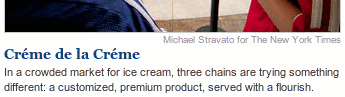

Chéap shot at the paper

I’m curious how something like this makes it to the front page of nytimes.com. Who signs off on “créme,” exactly? Is this person familiar with Google? It’s very easy nowadays to check the spellings of words in languages you don’t speak.
Not to mention that the French spelling of “cream” has been beaten to death by American marketers, usually with the correct grave accent. Just look in your makeup drawer, woman!
Anyway, nobody cares about a boring-ass trend piece on “marble slab” ice cream chains (whoa, there’s one in every mall in America!).
Add a comment